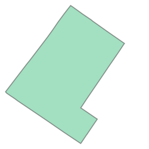
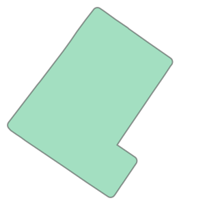

Show Code
# !pip install pyprojRequirement already satisfied: pyproj in /Users/senseablecity/anaconda3/envs/geospatial/lib/python3.9/site-packages (2.6.1.post1)# !pip install pyprojRequirement already satisfied: pyproj in /Users/senseablecity/anaconda3/envs/geospatial/lib/python3.9/site-packages (2.6.1.post1)Fiona is an excellent tool for spatial manipulation. This session show you how to use fiona to read shapefile and metadata, use Shapely and Fiona to do spatial analysis, and and write shapefiles. These libraries are essentially wrappers for GEOS and OGR, respectively, which provide clean, Pythonic interfaces for performing the processing, while still keeping the performance capabilities of the underlying libraries.
Fiona is used for reading and writing vector files (here we’re using Shapefiles), while Shapely is used for doing the manipulation and analysis of the geometric objects.
Read metadata, attributes, geometry of features in shapfile using fiona
Create shapefile based on the longitude and latitude
Convert the projection of shapefiles using pyproj
Do buffer analysis using fiona+shapely
Do intersection of point feature class and polygon feature class
References:
Fiona Manual, http://toblerity.org/fiona/manual.html
Shapely Manual, http://toblerity.org/shapely/manual.html
AZAVEA Research Blog, Using Shapely and Fiona to Locate High-Risk Traffic Areas, https://www.azavea.com/blog/2016/10/05/philippines-road-safety-using-shapely-fiona-locate-high-risk-traffic-areas/
# get the meta data of shapefile, such as spatial reference, field names, etc
import fiona
from fiona.crs import to_string
from shapely.geometry import mapping, shape
census_shp = 'data/philadelphia-census-tract.shp'
with fiona.open(census_shp, 'r') as nb_lyr:
driver = nb_lyr.driver # the driver of the shapefile
schema = nb_lyr.schema #schema of shapefile
crs = nb_lyr.crs # coordinate reference system of the shapefile
meta = nb_lyr.meta # more details about the metadata of the shapefile
Let’s take a look at what those metadata look like
print ('The driver is:', driver)
print ('The schema is:', schema)
print ('The coordinate reference system is:', crs)
print ('the metadata is:', meta)The driver is: ESRI Shapefile
The schema is: {'properties': OrderedDict([('STATEFP', 'str:80'), ('COUNTYFP', 'str:80'), ('TRACTCE', 'str:80'), ('GEOID', 'str:80'), ('NAME_x', 'str:80'), ('NAMELSAD', 'str:80'), ('MTFCC', 'str:80'), ('FUNCSTAT', 'str:80'), ('ALAND', 'int:18'), ('AWATER', 'int:18'), ('INTPTLAT', 'str:80'), ('INTPTLON', 'str:80'), ('NAME_y', 'str:80'), ('GEO_ID', 'str:80'), ('white_popu', 'str:80'), ('non-hispan', 'str:80'), ('black_popu', 'str:80'), ('asian_popu', 'str:80'), ('hispanic_p', 'str:80'), ('total_popu', 'str:80'), ('median_hou', 'str:80'), ('per_capita', 'str:80'), ('built_age', 'str:80'), ('less_highs', 'str:80'), ('bachelor', 'str:80'), ('totaleduca', 'str:80'), ('male_und18', 'str:80'), ('female_und', 'str:80'), ('male65_66', 'str:80'), ('male67_69', 'str:80'), ('male70_74', 'str:80'), ('male75_79', 'str:80'), ('male80_84', 'str:80'), ('male85_', 'str:80'), ('fema_65_66', 'str:80'), ('fema_67_69', 'str:80'), ('fema70_74', 'str:80'), ('fema75_79', 'str:80'), ('fema80_84', 'str:80'), ('fema85_', 'str:80'), ('state', 'str:80'), ('county', 'str:80'), ('tract', 'str:80')]), 'geometry': 'Polygon'}
The coordinate reference system is: {'init': 'epsg:2272'}
the metadata is: {'driver': 'ESRI Shapefile', 'schema': {'properties': OrderedDict([('STATEFP', 'str:80'), ('COUNTYFP', 'str:80'), ('TRACTCE', 'str:80'), ('GEOID', 'str:80'), ('NAME_x', 'str:80'), ('NAMELSAD', 'str:80'), ('MTFCC', 'str:80'), ('FUNCSTAT', 'str:80'), ('ALAND', 'int:18'), ('AWATER', 'int:18'), ('INTPTLAT', 'str:80'), ('INTPTLON', 'str:80'), ('NAME_y', 'str:80'), ('GEO_ID', 'str:80'), ('white_popu', 'str:80'), ('non-hispan', 'str:80'), ('black_popu', 'str:80'), ('asian_popu', 'str:80'), ('hispanic_p', 'str:80'), ('total_popu', 'str:80'), ('median_hou', 'str:80'), ('per_capita', 'str:80'), ('built_age', 'str:80'), ('less_highs', 'str:80'), ('bachelor', 'str:80'), ('totaleduca', 'str:80'), ('male_und18', 'str:80'), ('female_und', 'str:80'), ('male65_66', 'str:80'), ('male67_69', 'str:80'), ('male70_74', 'str:80'), ('male75_79', 'str:80'), ('male80_84', 'str:80'), ('male85_', 'str:80'), ('fema_65_66', 'str:80'), ('fema_67_69', 'str:80'), ('fema70_74', 'str:80'), ('fema75_79', 'str:80'), ('fema80_84', 'str:80'), ('fema85_', 'str:80'), ('state', 'str:80'), ('county', 'str:80'), ('tract', 'str:80')]), 'geometry': 'Polygon'}, 'crs': {'init': 'epsg:2272'}, 'crs_wkt': 'PROJCS["NAD83 / Pennsylvania South (ftUS)",GEOGCS["NAD83",DATUM["North_American_Datum_1983",SPHEROID["GRS 1980",6378137,298.257222101,AUTHORITY["EPSG","7019"]],AUTHORITY["EPSG","6269"]],PRIMEM["Greenwich",0,AUTHORITY["EPSG","8901"]],UNIT["degree",0.0174532925199433,AUTHORITY["EPSG","9122"]],AUTHORITY["EPSG","4269"]],PROJECTION["Lambert_Conformal_Conic_2SP"],PARAMETER["latitude_of_origin",39.3333333333333],PARAMETER["central_meridian",-77.75],PARAMETER["standard_parallel_1",40.9666666666667],PARAMETER["standard_parallel_2",39.9333333333333],PARAMETER["false_easting",1968500],PARAMETER["false_northing",0],UNIT["US survey foot",0.304800609601219,AUTHORITY["EPSG","9003"]],AXIS["Easting",EAST],AXIS["Northing",NORTH],AUTHORITY["EPSG","2272"]]'}crs{'init': 'epsg:2272'}Let’s print the geometry and attribute of the features in shapefile
with fiona.open(census_shp, 'r') as nb_lyr:
for feat in nb_lyr:
# attribute of the neighborhood features
attr = feat['properties']
name = attr['TRACTCE'] #you can find other attribute based on the metadata of the shapefile
# print ('The neighborhod is:', name)
# get the geometry of the polygon feature
geom = feat['geometry']
# print ('geom is:', geom)We can convert the dictionary geom variable into a shapely Polygon object using shapely. Here is one example of using shapely to deal with the geometry of features in shapefile.
# the shape is a function in shapely, we import "from shapely.geometry import shape"
shape(geom)
buff_geom = shape(geom).buffer(100)
buff_geom
# mapping(shape(point['geometry']).buffer(5.0))
Using pandas to read the csv file and create shapefile based on the longitude and latitude. Pandas is just like MS Excel, it makes dealing with spreadsheet super easy. Let get started!
Reference:
https://www.tutorialspoint.com/python_pandas/index.htm
https://pandas.pydata.org/pandas-docs/stable/tutorials.html
Read the csv file using pandas
import pandas as pd
# read the csv file and create shapefile
coffee_shop_csv = 'data/cambridge_coffee_shops.csv'
coffee_shop_sheet = pd.read_csv(coffee_shop_csv)
# coffee_shop_sheetPrint the first 5 records of the dataframe, this will help you know the structure of the dataframe
# this will print the first 10 records of the data frame
coffee_shop_sheet.head()| id | name | address | city | state | zip | lat | lon | |
|---|---|---|---|---|---|---|---|---|
| 0 | 1 | 1369 Coffee House | 1369 Cambridge St | Cambridge | MA | 2139 | 42.373695 | -71.100440 |
| 1 | 2 | 1369 Coffee House | 757 Massachusetts Ave | Cambridge | MA | 2139 | 42.366432 | -71.105430 |
| 2 | 3 | Aceituna Cafe | 605 W Kendall St | Cambridge | MA | 2142 | 42.364370 | -71.081924 |
| 3 | 4 | Al's Deli Cafe-Cambridge | 1354 Massachusetts Ave | Cambridge | MA | 2138 | 42.373238 | -71.118340 |
| 4 | 5 | Algiers Coffee House | 40 Brattle St # 3 | Cambridge | MA | 2138 | 42.373840 | -71.121380 |
We can create a shapefile easily using Geopandas
from geopandas import GeoDataFrame as gdf
import geopandas as gpd
import pandas as pd
crs = {'init': 'epsg:4326'} #http://www.spatialreference.org/ref/epsg/2263/
# crs = {'epsg': 4326} #http://www.spatialreference.org/ref/epsg/2263/
# create a geo-dataframe
points_gdf= gdf(coffee_shop_sheet, crs=crs, \
geometry=gpd.points_from_xy(coffee_shop_sheet.lon, coffee_shop_sheet.lat))
# save the geo-dataframe as a shapefile
points_gdf.to_file("data/coffe_shop.shp")/Users/senseablecity/anaconda3/envs/geospatial/lib/python3.9/site-packages/pyproj/crs/crs.py:53: FutureWarning: '+init=<authority>:<code>' syntax is deprecated. '<authority>:<code>' is the preferred initialization method. When making the change, be mindful of axis order changes: https://pyproj4.github.io/pyproj/stable/gotchas.html#axis-order-changes-in-proj-6
return _prepare_from_string(" ".join(pjargs))create a shapefile using Fiona based on the coordinate and attributes information in the csv file
from shapely.geometry import Point, mapping
# prepare the schema and crs of the output shapefile
schema = {
'geometry': 'Point',
'properties': {
'id': 'str: 20',
'name': 'str: 20',
'address': 'str: 20',
'city': 'str: 20',
'state':'str: 20',
'zip': 'str: 7'
}
}
crs = {'init': u'epsg:4326'}
# The output shapefile
coffee_shop_shp = 'data/cambridge_coffee_shops2.shp'
with fiona.open(coffee_shop_shp, 'w', driver = "ESRI Shapefile", crs = crs, schema=schema) as output:
for row in coffee_shop_sheet.iterrows():
lon = row[1][7]
lat = row[1][6]
id_ = row[1][0]
name = row[1][1]
address = row[1][2]
city = row[1][3]
state = row[1][4]
zipcode = row[1][5]
point = Point(float(lon), float(lat))
output.write({'properties':{'id': id_,
'name': name,
'address': address,
'city': city,
'state': state,
'zip': zipcode
},
'geometry': mapping(point)
})
print ('You have export the shapefile successfully')You have export the shapefile successfullyWe will use Pyproj to change the projection of the shapefile
import numpy as np
from pyproj import Transformer, transform
transformer = Transformer.from_crs(2263, 4326)
x_coords = 80481
y_coords = 224831
transformer = Transformer.from_crs(2263, 4326)
transformer.transform(x_coords, y_coords)(40.73759340928393, -77.26199309733204)The epsg code of Massachusetts is 6492. For more information about the projection and the epsg code can be find here, http://spatialreference.org/ref/epsg/?search=massachusetts&srtext=Search
import pyproj
from itertools import repeat
import sys
import time
from pyproj import Transformer
transformer = Transformer.from_crs(4326, 6492)
crs = {'init': 'epsg:6492'}
coffee_shop_shp = 'data/cambridge_coffee_shops2.shp'
coffee_shop_shp_reproj = 'data/cambridge_coffee_shops2_massproj.shp'
# write the reprojected point feature to shapefile
with fiona.open(coffee_shop_shp) as source:
schema = source.schema
with fiona.open(coffee_shop_shp_reproj, 'w', driver=source.driver, crs=crs,schema=schema) as dest:
for feat in source:
feat_geom = feat['geometry']
data = feat['properties']
coordinates = feat_geom['coordinates']
print(coordinates)
# Transform the coordinates of every ring.
reprojCoords = transformer.transform(coordinates[1], coordinates[0])
# copy the geom object, but update the reprojected coordinate
reproj_geom = feat_geom
reproj_geom['coordinates'] = reprojCoords
dest.write({'geometry': mapping(shape(reproj_geom)),'properties': data})
(-71.10044, 42.373695)
(-71.10543, 42.366432)
(-71.081924, 42.36437)
(-71.11834, 42.373238)
(-71.12138, 42.37384)
(-71.091286, 42.36342)
(-71.08602, 42.36341)
(-71.14083, 42.387756)
(-71.090858, 42.366606)
(-71.12067, 42.37198)
(-71.11313, 42.374096)
(-71.12708, 42.39454)
(-71.1157, 42.371605)
(-71.11851, 42.38885)
(-71.09102, 42.37246)
(-71.099236, 42.36276)
(-71.12187, 42.375237)
(-71.121185, 42.37364)
(-71.11014, 42.36896)
(-71.12072, 42.374268)
(-71.124954, 42.37409)
(-71.1095, 42.374847)
(-71.08831, 42.36659)
(-71.08262, 42.362)
(-71.11892, 42.38863)
(-71.076715, 42.36858)
(-71.093704, 42.372818)
(-71.11141, 42.369423)
(-71.14297, 42.389206)
(-71.094, 42.36653)
(-71.13211, 42.398865)
(-71.07953, 42.37242)
(-71.14183, 42.39465)
(-71.1415, 42.387127)
(-71.12106, 42.37413)
(-71.10325, 42.365105)
(-71.12099, 42.371624)
(-71.11589, 42.36088)
(-71.0942, 42.359676)
(-71.12099, 42.371624)
(-71.10432, 42.370617)
(-71.093605, 42.366386)
(-71.13474, 42.402267)
(-71.114914, 42.37314)
(-71.14265, 42.38961)
(-71.1415, 42.387127)
(-71.093605, 42.366386)
(-71.10064, 42.36359)
(-71.10082, 42.363686)
(-71.07228, 42.36886)
(-71.088774, 42.362997)
(-71.097305, 42.361603)
(-71.120735, 42.3728)
(-71.08598, 42.366653)
(-71.11726, 42.371063)
(-71.0835, 42.371494)
(-71.110695, 42.369167)
(-71.13006, 42.397156)
(-71.076121, 42.367463)
(-71.10289, 42.36617)
(-71.118866, 42.373714)
(-71.087937, 42.363893)
(-71.14286, 42.38805)
(-71.12038, 42.374393)
(-71.11998, 42.37278)
(-71.11313, 42.374096)
(-71.08598, 42.3629)
(-71.10389, 42.36553)
(-71.120053, 42.381899)
(-71.115295, 42.35772)
(-71.09108, 42.372467)
(-71.080154, 42.371063)
(-71.08952, 42.372257)
(-71.120834, 42.373253)
(-71.0766, 42.367104)
(-71.11955, 42.384068)
(-71.08952, 42.372257)
(-71.128845, 42.39609)
(-71.08267, 42.36528)
(-71.08914, 42.372208)
(-71.119738, 42.384598)
(-71.148877, 42.375159)
(-71.118901, 42.3873)Here are a few tricks to try out if you want to optimize your transformations. https://pyproj4.github.io/pyproj/stable/advanced_examples.html#optimize-transformations
import time
t0 = time.time()
traffic_accident = 'data/crash_data_collision_crash_2007_2017.shp'
layer = fiona.open(traffic_accident)
crs = layer.crs
schema = layer.schema
for feat in layer:
feat_geom = feat['geometry']
coordinates = feat_geom['coordinates']
print(time.time() - t0)6.42966103553772Check the coordinate reference system of the shapefile
import pyproj
from itertools import repeat
import sys
import time
from pyproj import Transformer
# the name of the ouput reprojected shapefile
trafficAccident_reproj = 'data/crash_data_collision_crash_2007_2017_reproj.shp'
transformer = Transformer.from_crs(4326, 2272)
# write the reprojected point feature to shapefile
with fiona.open(traffic_accident) as source:
crs={'init': 'epsg:2272'}
schema = source.schema
with fiona.open(trafficAccident_reproj, 'w', driver=source.driver, \
crs=crs,schema=schema) as dest:
for feat in source:
feat_geom = feat['geometry']
data = feat['properties']
coordinates = feat_geom['coordinates']
#print(coordinates)
# Transform the coordinates of every ring.
reprojCoords = transformer.transform(coordinates[1], coordinates[0])
reproj_geom = feat_geom
reproj_geom['coordinates'] = reprojCoords
dest.write({'geometry': mapping(shape(reproj_geom)),'properties': data})
You may find it slower than GeoPandas, this is because we use for loop here and do the transform one by one. There are several tricks to increase the efficiency, like use numpy array. In this class, we are not going to increase the efficiency here. If you interested, you can also check the implementation in GeoPandas. https://github.com/geopandas/geopandas
The core idea behind the R-tree is to form a tree-like data structure where nearby objects are grouped together, and their geographical extent (minimum bounding box) is inserted into the data structure (i.e. R-tree). This bounding box then represents the whole group of geometries as one level (typically called as “page” or “node”) in the data structure.
First step is to build the Rtree on the point feature. If you have question about which shapefile should be used as base for the Rtree, a tip is to use the shapefile has more features.
import rtree
import fiona
import os, os.path
from statistics import median
from shapely.geometry import shape
from shapely.ops import transform
from functools import partial
import pyproj
import time
neighborhood_shp = 'data/philadelphia-census-tract.shp'
trafficAccident_reproj = 'data/crash_data_collision_crash_2007_2017_reproj.shp'
outPolygonShp = 'data/census-traffic-accident.shp'
t0 = time.time()
pnt_lyr = fiona.open(trafficAccident_reproj, 'r')
# create an empty spatial index object
index = rtree.index.Index()
# populate the spatial index, the polygon features
i = 0
for fid, feature in pnt_lyr.items():
i = i + 1
if i % 10000 == 0: print (i)
geometry = shape(feature['geometry'])
# add a buffer in order to create a r-tree
geometry_buffered = geometry.buffer(10)
geotype = feature['geometry']['type']
index.insert(fid, geometry_buffered.bounds)
10000
20000
30000
40000
50000
60000
70000pnt_lyr.crs
# loop all polygons and assign GVI values
with fiona.open(neighborhood_shp, 'r') as polygon_lyr:
schema = polygon_lyr.schema.copy()
schema['properties']['AcciNum']='float'
input_crs = polygon_lyr.crspolygon_lyr.crs
pnt_lyr.crs{'init': 'epsg:2272'}Based on the built Rtree to loop all features in the polygon and calculate the attribute
# loop all polygons and assign GVI values
with fiona.open(neighborhood_shp, 'r') as polygon_lyr:
schema = polygon_lyr.schema.copy()
schema['properties']['AcciNum']='float'
input_crs = polygon_lyr.crs
# write the intersected point into the new shapefile
with fiona.open(outPolygonShp, 'w', 'ESRI Shapefile', schema, input_crs) as output:
# loop the polygon feature
for idx, featPoly in enumerate(polygon_lyr):
print('Polygon:', idx)
geomPoly = shape(featPoly['geometry'])
attriPoly = featPoly['properties']
# using the bounding box to find the close but may not intersected point feature
fids = [int(i) for i in index.intersection(geomPoly.bounds)]
# count the number of accidents
count = 0
# loop all features in bounding box and then judge if they are intersected
for fid in fids:
featPnt = pnt_lyr[fid]
geomPnt = shape(featPnt['geometry'])
# if the point is intersected with the polygon, then save the point feature into the output shapefile
if geomPoly.intersects(geomPnt):
count = count + 1
attriPoly['AcciNum']=count
output.write({'geometry': mapping(geomPoly),'properties': attriPoly})
Polygon: 0
The count is: 9
Polygon: 1
The count is: 40
Polygon: 2
The count is: 8
Polygon: 3
The count is: 19
Polygon: 4
The count is: 16
Polygon: 5
The count is: 17
Polygon: 6
The count is: 32
Polygon: 7
The count is: 24
Polygon: 8
The count is: 69
Polygon: 9
The count is: 48
Polygon: 10
The count is: 5
Polygon: 11
The count is: 35
Polygon: 12
The count is: 20
Polygon: 13
The count is: 14
Polygon: 14
The count is: 15
Polygon: 15
The count is: 1
Polygon: 16
The count is: 38
Polygon: 17
The count is: 5
Polygon: 18
The count is: 13
Polygon: 19
The count is: 7
Polygon: 20
The count is: 19
Polygon: 21
The count is: 8
Polygon: 22
The count is: 6
Polygon: 23
The count is: 121
Polygon: 24
The count is: 17
Polygon: 25
The count is: 15
Polygon: 26
The count is: 20
Polygon: 27
The count is: 38
Polygon: 28
The count is: 32
Polygon: 29
The count is: 76
Polygon: 30
The count is: 75
Polygon: 31
The count is: 158
Polygon: 32
The count is: 92
Polygon: 33
The count is: 11
Polygon: 34
The count is: 47
Polygon: 35
The count is: 149
Polygon: 36
The count is: 45
Polygon: 37
The count is: 32
Polygon: 38
The count is: 14
Polygon: 39
The count is: 5
Polygon: 40
The count is: 6
Polygon: 41
The count is: 11
Polygon: 42
The count is: 11
Polygon: 43
The count is: 7
Polygon: 44
The count is: 5
Polygon: 45
The count is: 9
Polygon: 46
The count is: 39
Polygon: 47
The count is: 47
Polygon: 48
The count is: 23
Polygon: 49
The count is: 33
Polygon: 50
The count is: 23
Polygon: 51
The count is: 2
Polygon: 52
The count is: 4
Polygon: 53
The count is: 2
Polygon: 54
The count is: 17
Polygon: 55
The count is: 12
Polygon: 56
The count is: 25
Polygon: 57
The count is: 40
Polygon: 58
The count is: 20
Polygon: 59
The count is: 39
Polygon: 60
The count is: 36
Polygon: 61
The count is: 33
Polygon: 62
The count is: 25
Polygon: 63
The count is: 23
Polygon: 64
The count is: 10
Polygon: 65
The count is: 33
Polygon: 66
The count is: 34
Polygon: 67
The count is: 64
Polygon: 68
The count is: 54
Polygon: 69
The count is: 41
Polygon: 70
The count is: 56
Polygon: 71
The count is: 48
Polygon: 72
The count is: 18
Polygon: 73
The count is: 9
Polygon: 74
The count is: 13
Polygon: 75
The count is: 21
Polygon: 76
The count is: 4
Polygon: 77
The count is: 14
Polygon: 78
The count is: 9
Polygon: 79
The count is: 11
Polygon: 80
The count is: 11
Polygon: 81
The count is: 9
Polygon: 82
The count is: 21
Polygon: 83
The count is: 33
Polygon: 84
The count is: 11
Polygon: 85
The count is: 49
Polygon: 86
The count is: 28
Polygon: 87
The count is: 11
Polygon: 88
The count is: 24
Polygon: 89
The count is: 19
Polygon: 90
The count is: 33
Polygon: 91
The count is: 39
Polygon: 92
The count is: 7
Polygon: 93
The count is: 18
Polygon: 94
The count is: 13
Polygon: 95
The count is: 19
Polygon: 96
The count is: 6
Polygon: 97
The count is: 14
Polygon: 98
The count is: 23
Polygon: 99
The count is: 12
Polygon: 100
The count is: 13
Polygon: 101
The count is: 2
Polygon: 102
The count is: 1
Polygon: 103
The count is: 3
Polygon: 104
The count is: 4
Polygon: 105
The count is: 8
Polygon: 106
The count is: 13
Polygon: 107
The count is: 22
Polygon: 108
The count is: 9
Polygon: 109
The count is: 19
Polygon: 110
The count is: 12
Polygon: 111
The count is: 22
Polygon: 112
The count is: 19
Polygon: 113
The count is: 9
Polygon: 114
The count is: 22
Polygon: 115
The count is: 26
Polygon: 116
The count is: 19
Polygon: 117
The count is: 28
Polygon: 118
The count is: 22
Polygon: 119
The count is: 32
Polygon: 120
The count is: 24
Polygon: 121
The count is: 24
Polygon: 122
The count is: 13
Polygon: 123
The count is: 19
Polygon: 124
The count is: 13
Polygon: 125
The count is: 41
Polygon: 126
The count is: 124
Polygon: 127
The count is: 53
Polygon: 128
The count is: 14
Polygon: 129
The count is: 53
Polygon: 130
The count is: 32
Polygon: 131
The count is: 23
Polygon: 132
The count is: 7
Polygon: 133
The count is: 27
Polygon: 134
The count is: 27
Polygon: 135
The count is: 24
Polygon: 136
The count is: 46
Polygon: 137
The count is: 17
Polygon: 138
The count is: 18
Polygon: 139
The count is: 5
Polygon: 140
The count is: 11
Polygon: 141
The count is: 14
Polygon: 142
The count is: 30
Polygon: 143
The count is: 10
Polygon: 144
The count is: 11
Polygon: 145
The count is: 6
Polygon: 146
The count is: 5
Polygon: 147
The count is: 32
Polygon: 148
The count is: 15
Polygon: 149
The count is: 22
Polygon: 150
The count is: 16
Polygon: 151
The count is: 24
Polygon: 152
The count is: 52
Polygon: 153
The count is: 14
Polygon: 154
The count is: 7
Polygon: 155
The count is: 18
Polygon: 156
The count is: 31
Polygon: 157
The count is: 36
Polygon: 158
The count is: 48
Polygon: 159
The count is: 28
Polygon: 160
The count is: 5
Polygon: 161
The count is: 27
Polygon: 162
The count is: 20
Polygon: 163
The count is: 12
Polygon: 164
The count is: 25
Polygon: 165
The count is: 16
Polygon: 166
The count is: 20
Polygon: 167
The count is: 10
Polygon: 168
The count is: 6
Polygon: 169
The count is: 20
Polygon: 170
The count is: 41
Polygon: 171
The count is: 19
Polygon: 172
The count is: 32
Polygon: 173
The count is: 46
Polygon: 174
The count is: 24
Polygon: 175
The count is: 18
Polygon: 176
The count is: 21
Polygon: 177
The count is: 19
Polygon: 178
The count is: 11
Polygon: 179
The count is: 14
Polygon: 180
The count is: 12
Polygon: 181
The count is: 27
Polygon: 182
The count is: 14
Polygon: 183
The count is: 11
Polygon: 184
The count is: 23
Polygon: 185
The count is: 23
Polygon: 186
The count is: 10
Polygon: 187
The count is: 5
Polygon: 188
The count is: 28
Polygon: 189
The count is: 17
Polygon: 190
The count is: 28
Polygon: 191
The count is: 13
Polygon: 192
The count is: 13
Polygon: 193
The count is: 11
Polygon: 194
The count is: 14
Polygon: 195
The count is: 44
Polygon: 196
The count is: 6
Polygon: 197
The count is: 19
Polygon: 198
The count is: 11
Polygon: 199
The count is: 22
Polygon: 200
The count is: 56
Polygon: 201
The count is: 58
Polygon: 202
The count is: 25
Polygon: 203
The count is: 92
Polygon: 204
The count is: 42
Polygon: 205
The count is: 195
Polygon: 206
The count is: 21
Polygon: 207
The count is: 9
Polygon: 208
The count is: 9
Polygon: 209
The count is: 43
Polygon: 210
The count is: 13
Polygon: 211
The count is: 16
Polygon: 212
The count is: 14
Polygon: 213
The count is: 16
Polygon: 214
The count is: 22
Polygon: 215
The count is: 14
Polygon: 216
The count is: 20
Polygon: 217
The count is: 23
Polygon: 218
The count is: 7
Polygon: 219
The count is: 12
Polygon: 220
The count is: 31
Polygon: 221
The count is: 16
Polygon: 222
The count is: 25
Polygon: 223
The count is: 25
Polygon: 224
The count is: 55
Polygon: 225
The count is: 40
Polygon: 226
The count is: 10
Polygon: 227
The count is: 53
Polygon: 228
The count is: 12
Polygon: 229
The count is: 53
Polygon: 230
The count is: 11
Polygon: 231
The count is: 15
Polygon: 232
The count is: 31
Polygon: 233
The count is: 8
Polygon: 234
The count is: 5
Polygon: 235
The count is: 6
Polygon: 236
The count is: 7
Polygon: 237
The count is: 20
Polygon: 238
The count is: 28
Polygon: 239
The count is: 12
Polygon: 240
The count is: 29
Polygon: 241
The count is: 27
Polygon: 242
The count is: 33
Polygon: 243
The count is: 14
Polygon: 244
The count is: 4
Polygon: 245
The count is: 64
Polygon: 246
The count is: 20
Polygon: 247
The count is: 19
Polygon: 248
The count is: 23
Polygon: 249
The count is: 33
Polygon: 250
The count is: 27
Polygon: 251
The count is: 24
Polygon: 252
The count is: 46
Polygon: 253
The count is: 27
Polygon: 254
The count is: 30
Polygon: 255
The count is: 14
Polygon: 256
The count is: 20
Polygon: 257
The count is: 33
Polygon: 258
The count is: 59
Polygon: 259
The count is: 23
Polygon: 260
The count is: 30
Polygon: 261
The count is: 36
Polygon: 262
The count is: 49
Polygon: 263
The count is: 14
Polygon: 264
The count is: 11
Polygon: 265
The count is: 10
Polygon: 266
The count is: 23
Polygon: 267
The count is: 5
Polygon: 268
The count is: 14
Polygon: 269
The count is: 26
Polygon: 270
The count is: 29
Polygon: 271
The count is: 30
Polygon: 272
The count is: 9
Polygon: 273
The count is: 18
Polygon: 274
The count is: 30
Polygon: 275
The count is: 38
Polygon: 276
The count is: 36
Polygon: 277
The count is: 7
Polygon: 278
The count is: 29
Polygon: 279
The count is: 5
Polygon: 280
The count is: 20
Polygon: 281
The count is: 10
Polygon: 282
The count is: 18
Polygon: 283
The count is: 23
Polygon: 284
The count is: 133
Polygon: 285
The count is: 6
Polygon: 286
The count is: 12
Polygon: 287
The count is: 12
Polygon: 288
The count is: 6
Polygon: 289
The count is: 31
Polygon: 290
The count is: 7
Polygon: 291
The count is: 15
Polygon: 292
The count is: 9
Polygon: 293
The count is: 15
Polygon: 294
The count is: 37
Polygon: 295
The count is: 62
Polygon: 296
The count is: 17
Polygon: 297
The count is: 13
Polygon: 298
The count is: 26
Polygon: 299
The count is: 10
Polygon: 300
The count is: 15
Polygon: 301
The count is: 5
Polygon: 302
The count is: 6
Polygon: 303
The count is: 21
Polygon: 304
The count is: 18
Polygon: 305
The count is: 23
Polygon: 306
The count is: 17
Polygon: 307
The count is: 21
Polygon: 308
The count is: 13
Polygon: 309
The count is: 13
Polygon: 310
The count is: 6
Polygon: 311
The count is: 323
Polygon: 312
The count is: 10
Polygon: 313
The count is: 15
Polygon: 314
The count is: 8
Polygon: 315
The count is: 22
Polygon: 316
The count is: 494
Polygon: 317
The count is: 21
Polygon: 318
The count is: 15
Polygon: 319
The count is: 12
Polygon: 320
The count is: 3
Polygon: 321
The count is: 10
Polygon: 322
The count is: 3
Polygon: 323
The count is: 47
Polygon: 324
The count is: 20
Polygon: 325
The count is: 7
Polygon: 326
The count is: 24
Polygon: 327
The count is: 17
Polygon: 328
The count is: 32
Polygon: 329
The count is: 25
Polygon: 330
The count is: 36
Polygon: 331
The count is: 6
Polygon: 332
The count is: 17
Polygon: 333
The count is: 93
Polygon: 334
The count is: 22
Polygon: 335
The count is: 9
Polygon: 336
The count is: 10
Polygon: 337
The count is: 70
Polygon: 338
The count is: 18
Polygon: 339
The count is: 22
Polygon: 340
The count is: 11
Polygon: 341
The count is: 19
Polygon: 342
The count is: 6
Polygon: 343
The count is: 18
Polygon: 344
The count is: 20
Polygon: 345
The count is: 18
Polygon: 346
The count is: 17
Polygon: 347
The count is: 9
Polygon: 348
The count is: 39
Polygon: 349
The count is: 14
Polygon: 350
The count is: 8
Polygon: 351
The count is: 24
Polygon: 352
The count is: 5
Polygon: 353
The count is: 11
Polygon: 354
The count is: 131
Polygon: 355
The count is: 6
Polygon: 356
The count is: 15
Polygon: 357
The count is: 18
Polygon: 358
The count is: 43
Polygon: 359
The count is: 10
Polygon: 360
The count is: 55
Polygon: 361
The count is: 3
Polygon: 362
The count is: 19
Polygon: 363
The count is: 25
Polygon: 364
The count is: 14
Polygon: 365
The count is: 13
Polygon: 366
The count is: 9
Polygon: 367
The count is: 24
Polygon: 368
The count is: 12
Polygon: 369
The count is: 13
Polygon: 370
The count is: 6
Polygon: 371
The count is: 17
Polygon: 372
The count is: 25
Polygon: 373
The count is: 12
Polygon: 374
The count is: 8
Polygon: 375
The count is: 19
Polygon: 376
The count is: 16
Polygon: 377
The count is: 7
Polygon: 378
The count is: 15
Polygon: 379
The count is: 21
Polygon: 380
The count is: 10
Polygon: 381
The count is: 10
Polygon: 382
The count is: 9
Polygon: 383
The count is: 30featPnt['properties']['crash_year']2011